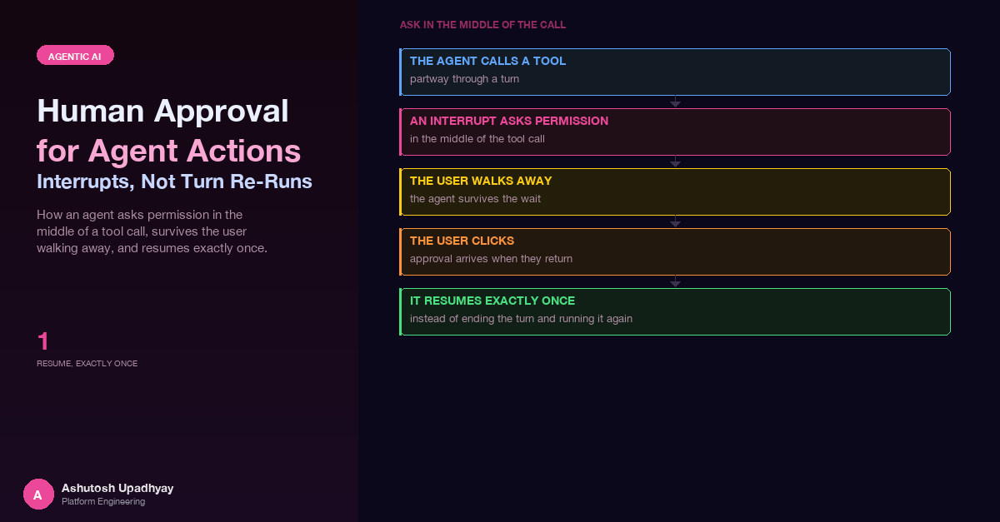

How an agent asks permission in the middle of a tool call, survives the user walking away, and resumes exactly once, instead of ending the turn and running it again after the click.
The approval design in my plan came down to one sentence. When a script in the agent's sandbox needs to download something and the sandbox refuses it, end the turn with a message that lists the blocked sites; if the user approves, run the whole turn again with those sites allowed. It needed no pause inside the agent loop, and on paper it worked.
While evaluating an agent-to-UI protocol, I read its section on interrupts: a run pauses and hands the client an interrupt with an id, a schema for the answer and an expiry; the client resumes the same run with a response. Put next to my plan, the difference was obvious. My design did not pause anything. It threw away a half-finished turn, including the tool results, the model's reasoning and whatever the earlier steps had cost, and then paid for all of it a second time. I rewrote the plan around the interrupt.
This post is about what an interrupt-based approval looks like once it is built: where the SDK does the work, where it hands you sharp edges, and what the storage layer has to guarantee. The title says "interrupts, not turn re-runs", but the sharpest lesson hides in a related fact: even with interrupts, something still re-runs. It is the body of the tool that asked.
The short version. The agent calls an approval tool. The tool raises an SDK interrupt, so the loop pauses and a structured card reaches the user. The approval lives in a durable record, not in process memory. On resume the tool runs again from the top and must recognise that it is being resumed. Four rules keep that safe: the approval tool runs alone in its batch, unattended runs get a deterministic deny, every record has a logical expiry and a physical one, and a resume is a conditional claim with a lease.
The agent can write and run analysis scripts in a sandbox. Most need nothing from the outside world; some need a reference file from a public site, or a package that is not pre-installed. The host is known only when the script runs: the model picks a URL while writing it, or the script follows a redirect to a mirror nobody listed. The sandbox refuses downloads from hosts that are not approved, so the run fails and somebody has to decide whether that host is acceptable.
That kills the usual way of handling agent permissions. A tool allowlist answers "may this agent call this tool?" by name, before the call. Here the tool is the same every time (run a script) and the thing needing a decision is a value inside the run: which host, for what reason, approved by whom, for how long. A static list cannot decide that.
So the shape of the feature is a conversation with the user in the middle of a turn:
Step 3 is where the design question lives. What is the agent doing while the user decides? Post #25 is about how much state a single in-flight turn accumulates. That accumulated state is exactly what a re-run throws away and then pays to rebuild, which is the argument against my first design.
The plan I rejected looked like this:
turn 1: user asks -> agent runs script -> sandbox refuses host
agent ends the turn: "I need access to host X. Approve?"
(user approves in the UI)
turn 2: the same question is sent again, with host X now approved
agent runs the whole thing from the startOn paper it has real virtues. There is no pause to implement and nothing to snapshot. The approval is just data that the second turn happens to read. Why not?
An interrupt fixes the first three by keeping one run alive across the pause, and the fourth by making the question an object with an id and a response schema.
In the SDK a tool can call an interrupt function. The call does not return a value the first time. It raises, the agent loop stops cleanly, and the caller receives the interrupt. Later the caller resumes the agent with the user's response, and the tool is invoked again; this time the interrupt call returns the response.
That last clause hides the trap. Resuming does not continue the tool from the line where it paused. It runs the tool body again from the top, and the interrupt call is the only line that behaves differently. Everything above it runs a second time: validation, lookups, merges. If that code is not idempotent, the resume is wrong in subtle ways.
Here is the concrete failure. The first call validates its inputs, merges in the hosts the sandbox refused this turn, drops anything already approved, and raises the interrupt. The user approves, and the approval is written to the store. Now the body re-runs: it merges the refused hosts again, finds every one of them already approved, and concludes "nothing to ask". After a deny it would be worse, reporting the opposite of what the user decided.
The fix is to let the tool know it is being resumed and give it a branch that does nothing but turn the stored card and the user's response into a result:
@tool(context=True)
def request_approval(reason: str, urls: list[str] | None, tool_context):
card = current_request().resume_card # set by the API on a resume
# RESUME: the body re-runs from the top. Answer ONLY from the stored
# card and the user's response. Never validate or merge again.
if card and own_interrupt_answered(tool_context):
answer = tool_context.interrupt("approval", reason=card_as_reason(card))
return outcome_from(card, answer) # approved / declined
# FIRST CALL: validate, merge what the sandbox refused, drop what is
# already approved, then ask.
card = build_card(reason, urls, refused_this_turn())
if not current_request().can_ask_a_human:
return deny("nobody can answer in this run")
answer = tool_context.interrupt("approval", reason=card) # raises until answered
return outcome_from(card, answer)Two details are easy to miss. The resume branch applies only to the call whose own interrupt was answered; a second, new approval request in the same turn is a fresh question and takes the normal path. And where the SDK's internals were the only way to ask, the fallback direction was chosen deliberately: if the state is unreadable, assume the resume card is this call's, because "never merge again" is the safe mistake.
The tool also never takes the user's identity, the approved set or the "can a human answer" flag from its arguments. They come from the request context the API set up, the rule from post #6: a model-controlled argument is not an identity.
A review caught a bug in the empty case before it shipped. A call that names nothing and finds nothing the sandbox refused this turn has nothing to approve, but the draft would have fallen through to "already approved". Because nothing yet filled the per-turn record of refused hosts, every argument-less call after a blocked run would have got that answer, and the model would loop: re-run the script, hit the same refusal, call the tool again. The fix was to return an input error telling the model to name the URLs or packages, or to run the step first so the blocked sites are recorded.
Models often emit several tool calls in a single step. That is fine when each call is independent. It is a problem with an interrupt in the batch.
Consider a step with two calls: the approval request and a second tool that uses the thing being approved. The SDK pauses on the interrupt, but the other call is queued in the same batch. When the user answers, the batch resumes and the queued call executes, even if the answer was no. The interrupt gated one tool; nothing stopped its neighbour.
The rule is that the approval tool must be the only tool that runs in its batch, and it is enforced by a hook, not by a prompt. The hook inspects the assistant message before the batch runs, keeps the first approval call and cancels everything else in the batch with a short text the model can act on:
def decide_batch(message):
uses = tool_uses(message)
first = next((u for u in uses if u["name"] == APPROVAL_TOOL), None)
if first is None:
return {} # no approval call: cancel nothing
cancel = {}
for u in uses:
if u is first:
continue
cancel[u["toolUseId"]] = (
"merged into the first approval request" if u["name"] == APPROVAL_TOOL
else "call the approval tool on its own")
return cancel
# before each tool call: if this call's id is in `cancel`, set cancel_tool = textThe decision depends on the message alone. That matters because the same event fires again on resume, with the finished results merged in, and the hook has to come to the same conclusion both times. A hook that kept mutable state about "which call already ran" would disagree with itself after a resume. The tool's description also tells the model to call it alone, but the description is advice and the hook is enforcement.
Not every run has a person watching. A scheduled or background run, or a script executing without a chat attached, cannot show a card, and an interrupt there would wait for an answer nobody can give. The API sets a capability flag on the request context, and the tool checks it before building the card. If nobody can answer, it returns an access-denied error at once, names what was blocked, and tells the model to continue without that data:
if not current_request().can_ask_a_human:
return deny("download approval cannot be asked in this run (nobody can "
"answer); the launch-time lists apply. Blocked: " + subject_text
+ ". Continue without that data and say so.")Two properties are worth copying. The answer is the same every time for the same situation, so tests can assert it. And the text gives the model a legitimate path: a bare "denied" invites retries and workarounds, while "continue without that data and say so" does not. Tool results are the model's ground truth for the turn (post #33 covers how they travel through the stream), and what the model writes about them can outlive the turn, as post #24 showed with memory. The wording of a deny is part of the design.
When the loop pauses, the process that served the request may be gone before the user clicks: a deploy, a restart or a different replica answering are all normal. So nothing the resume needs can live in memory. The API writes it down before showing the card, in two parts.
The order is deliberate. If the pointer were written first, a crash between the two writes would leave a card that points at nothing. If the snapshot write fails or is too large, no pointer and no card are created and the turn ends with an ordinary message. The worst case is a missing offer, not a broken one.
write snapshot -> confirmed object-store PUT
write pointer -> conditional put, only if there is no open request for
this chat (absent, or done, or expired, or past its expiry)
emit card -> only after both succeededA few details in the pointer are less obvious than they look.
The user clicks Approve. Two tabs might both send it, a retry might follow a flaky network, or the first resume might die halfway. The store has to make "who may resume this" a single atomic decision that survives the failure of the winner.
The resume endpoint runs a fixed sequence, and no step before the claim takes ownership; a failed check refuses or expires the request:
The claim is one conditional write that succeeds only if everything below is true at once:
claim IF hash matches AND id matches
AND (state = pending OR (state = claimed AND lease expired))
AND not expired AND claim_count = what I read
SET state = claimed, worker = me, lease = now + L, claim_count += 1Two concurrent clicks race on that write and exactly one wins; the loser gets "resume in progress".
The winner runs the resumed agent while a heartbeat task renews the lease on its own small executor. If the worker dies, the lease runs out and the next click can resume the request. Two guards stop that from looping: the claim counter has a cap, so a card that keeps killing its workers is denied and expired, and the heartbeat has a hard stop, so a stuck worker cannot hold a lease past the resume's deadline.
Once a resume finishes, the pointer is marked done and records where the final answer is stored. A second Approve for the same card is therefore harmless: the endpoint sees the state is done and replays the stored answer instead of running anything. That is the idempotency a payment API gives a retried request, applied to a chat turn.
A resumed turn may need another approval (the run is unblocked, then hits a second host). That new card does not create a second pointer. It replaces the open request in place, under a new interrupt id and a fresh secret, with the claim counter reset, in a single write conditional on the caller still holding the claim. If the claim was lost in the meantime, the chained card is not written.
An approval is a row per approved site or package, keyed by user and chat, stamped with the id of the card that created it, and given its own TTL. It covers the rest of that chat, not the whole account and not all time. A few choices follow from that.
The SDK ships its own human-in-the-loop intervention, so before keeping the custom tool I read it. In Strands Agents 1.61 it is a gate that runs before each tool call.
| Question | The built-in intervention | What this feature needed |
|---|---|---|
| What decides if approval is needed? | The tool name, via an allow list. Supports "all except these". An optional model-driven risk classifier decides for the rest. | The host the run is about to reach, which is known only at run time. |
| If the classifier fails? | Fail closed: any error or malformed result means approval is required. | Same principle. |
| What does the user see? | A plain-text prompt: tool name and full JSON input. | A structured card: sites, URLs, packages, reason. |
| Where is trust kept? | When trust is enabled, in agent state: it lasts as long as that state does, with no per-item expiry or revoke. | Durable rows, revocable per site. |
| On resume? | The gate runs before the tool, so the tool body does not re-run. | (Our tool body does re-run: see above.) |
| Deny? | The call is cancelled with a text result. | Same, plus removal of stored rows. |
My read: the built-in gate is the right tool when the decision is a function of the tool name. "Writing to this table always needs a person" is a one-line allow list, with the pause and resume plumbing included. It is the wrong tool when the decision depends on something that only appears at run time, when the approval must outlive the process, or when the user needs more than a JSON dump. Its one real advantage, that the tool body does not run twice, did not outweigh those, so the custom tool stayed.
The agent-UI protocol described the contract between a paused run and the person answering it, and it was the most useful thing I read during the redesign. The shipped wire shapes follow it:
| Field | Why it exists | How it shows up here |
|---|---|---|
| Interrupt id | The answer must name the question it answers. | An opaque, unguessable id minted by the server. A mismatch is refused as unknown. |
| Response schema | The client and server agree on what a valid answer is before it is sent. | A boolean for approved, plus an optional package list. Nothing else is accepted. |
| Status on the answer | Resolved and cancelled are different events. | A cancelled answer is treated as a deny, never as an approval. |
| Expiry | A question that never expires is a standing authorisation. | An absolute time on the card, enforced by a logical field on the record. |
| Idempotent replay | Answers get retried. | A done request replays the stored answer. Nothing runs twice. |
| State before the pause | The resume needs what the run knew. | The snapshot is confirmed before the pointer exists. |
One part of the protocol I did not take as written. It allows a resume to carry an answer for every open interrupt at once. Because the approval tool runs alone in its batch, there is at most one open interrupt per chat, and the endpoint requires exactly one answer entry; zero or several are rejected as incomplete rather than guessed at. With several parallel interrupts the protocol's rule is the right one. Adopt the rule your batches can actually produce.
Where the tool interprets a response, it fails closed. Only an explicit approval counts: a missing field, a cancelled status or an unknown shape all mean "no". The cheapest bug in an approval path is a parser that defaults to yes.
Two ideas follow from the shape of what exists. The first is a second front end. The card, the response schema and the expiry belong to the protocol, not the web UI, so a client in a team chat tool could render the same interrupt and send the same resume without touching the backend.
The second is using the SDK's built-in intervention where it fits. Name-based confirmations such as "this action always needs a person" are a one-line configuration there. The interesting version keeps this design's durable store and structured card behind it, so the gate decides by tool name while the approval stays a revocable row with an expiry.
Disclaimer: The views and opinions expressed in this post are my own and do not represent those of my employer or any organisation I am associated with.